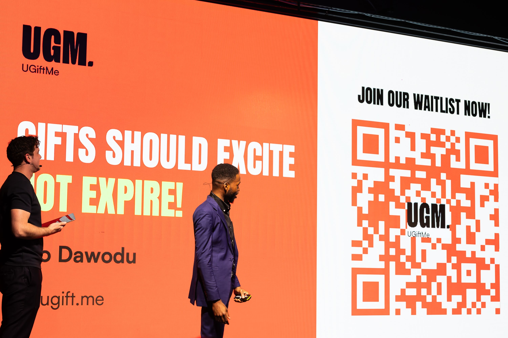
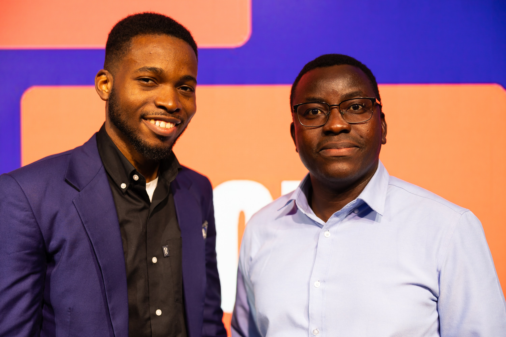
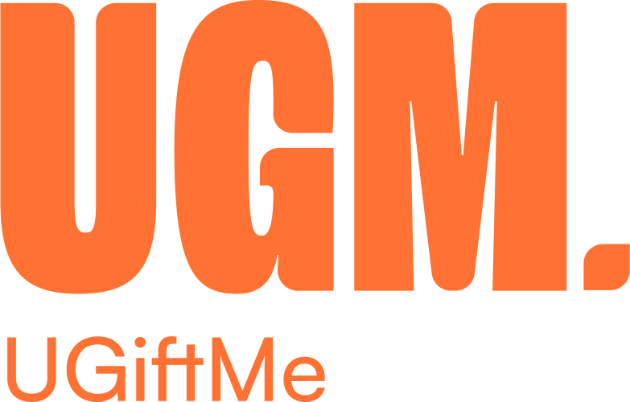

Ayo Dawodu
Co-founder, UGiftMe
Starting Out
Validation
It began as an MSc thesis at Lancaster University. What started as academic research quickly became an obsession.
Through Lean Startup Machine I faced the first crucible: stepping out of the building to talk to real customers, proving that what we build must authentically match what people need.
The Launchpad
MEST & The
$50k Decision
The Meltwater Entrepreneurial School of Technology (MEST) in Ghana was the real launchpad. Training deeply in software and business strategy alongside top talent.
Then came the boldest early decision: MEST & Jorn offered a $50k investment, and we walked away. Early on, I learned to say no to money that compromises the long-term vision.
Acceleration
SpeedUp Africa
& Arise Pitch Win

A Global Stage
Visa &
WorldRemit
Named globally as a finalist in the Visa Everywhere Initiative, and earning a feature from WorldRemit. We were no longer building for just our local market; we were competing on the world stage.
Alliances
Crucial
Partnerships
Growth comes through alliances.
Partnerships multiplied our reach exponentially across the continent.
Ecosystem Trust
TEF &
Founder Trust
Selected as a Tony Elumelu Foundation entrepreneur, backed by one of Africa's leading figures.
Shortly after, won the NES25 award, and received personal investment from a fellow Founders Institute entrepreneur. That founder-to-founder solidarity meant absolute trust.
Resilience
Solving Giftcard waste
UGiftme

Ecosystem Expansion
Institutional
Support
Partnerships with major institutional players expanded our footprint and solidified global credibility. It takes a village to sustain momentum.
Traction & Growth
Intrinsic
Value
Processed
Reached
Served
Received
Reflections
Key
Learnings
Distilled truth from 10+ years as a 2x technical founder.
Building two companies teaches you that saying "no" to the wrong money is just as important as earning the right money.
Your network truly is your net worth. Invest heavily into genuine founder relationships.
The real product is the company itself. Build for people, not just for the hype.
Thank You.
Building Loystar taught me how to start. Building UGiftMe taught me how to scale.
Every setback has simply been fuel for what comes next.
